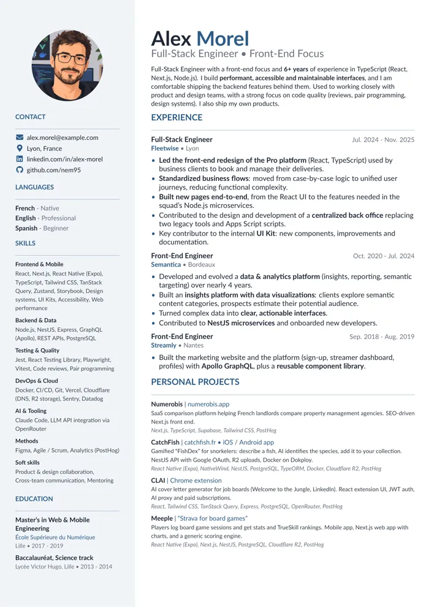
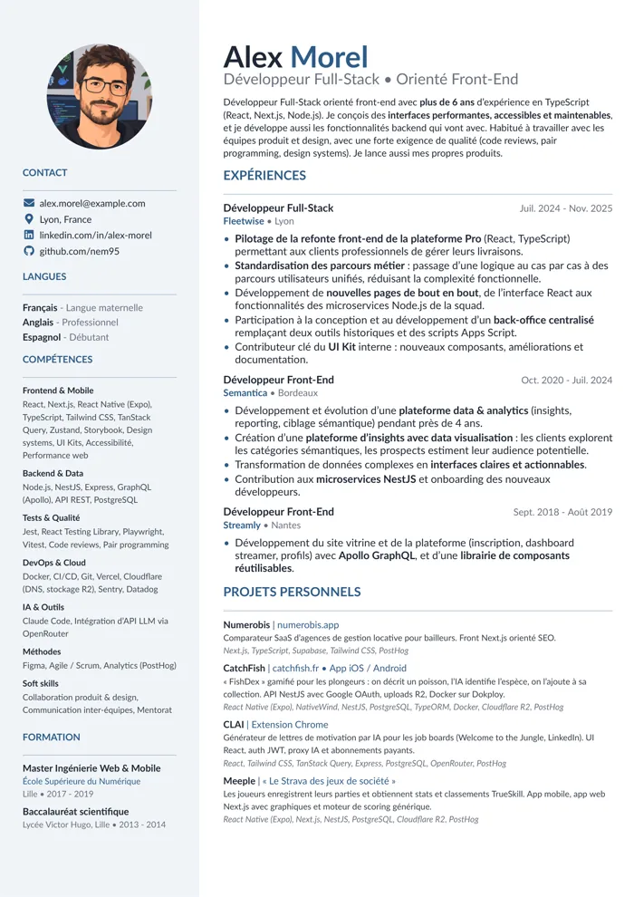

C'est quoi CVfacile ?
CVfacile est un outil en ligne de commande gratuit et open source qui crée des CV PDF d'une page, mis en page avec LaTeX, à partir d'un seul fichier JSON. Il suffit de Python 3.8+.
- Pour qui
- Les candidats qui veulent un CV différent pour chaque offre, avec un agent IA comme Claude Code, Cursor ou Codex, ou à la main.
- Comment ça marche
- Ton agent transforme ton vieux CV en
cv.json, lancechecketbuild, lit les avertissements et raccourcit le texte jusqu'à tenir sur une page. - Ce que tu obtiens
- Un PDF et un aperçu PNG, dans 10 modèles et toutes les langues que tu ajoutes. Les CV générés t'appartiennent.
Ton vieux CV entre. Un CV sur mesure sort.
Ton agent réécrit. CVfacile met en page, pour que chaque version soit nickel.
- Donne-leIndique à ton agent ton ancien PDF ou fichier Word, ou colle ton profil LinkedIn.
- Il écrit cv.jsonUniquement avec ce qu'il y a dans ton CV : aucun poste, diplôme ou chiffre inventé. S'il manque une info, il te la demande.
- Il compile et vérifiePDF et aperçu PNG. Il lit les avertissements et raccourcit le texte jusqu'à tenir sur une page.
- Un par offreColle une offre d'emploi : il enregistre une variante pour cette offre. Ton CV de base ne change pas.
Voici mon vieux CV : ~/Downloads/cv_2023.pdf. Transforme-le en CV CVfacile.
cv.json écrit. Deux questions avant de compiler : quelles étaient tes dates chez Semantica ? Je garde ton numéro de téléphone ?
Maintenant adapte-le à cette offre, enregistre-le sous offre-x, et garde-le sur une page.
out/cv-fr.pdf créé : 1 page, aucun avertissement. J'ai remonté ton expérience React et retiré deux anciennes lignes.

Fonctionne avec Claude Code, Cursor et Codex. Le dépôt fournit les outils MCP (.mcp.json), une sortie --json sur chaque commande, et les règles dans AGENTS.md.
10 modèles LaTeX. Même contenu.
Chaque modèle de CV utilise le même fichier JSON. Change avec --template <nom>, ou compare-les tous avec --template all. Clique sur un modèle pour le voir en grand.
Un fichier JSON. Toutes les versions.
Une version par offre, par langue, avec ou sans ton numéro de téléphone. Ton agent les garde toutes dans le même fichier JSON.
Toutes les langues.
Toutes les variantes.
Chaque texte ou liste peut contenir plusieurs langues. Les variantes modifient le CV de base : objets fusionnés, listes remplacées, hide masque des champs.


"label": { "en": "Full-Stack Engineer", "fr": "Développeur Full-Stack" }, "variants": { "no-phone": { "hide": ["phone"] } } $ ./cvfacile build cv.json --lang fr --variant no-phone

Tient sur une page
Un peu trop long ? Le texte passe de 10pt à 9pt et tu es prévenu. Encore trop long ? Tu reçois un avertissement.
Zéro LaTeX à écrire
Utilise **gras** et [liens](https://…). Les caractères comme &, % ou _ sont échappés pour toi.
Léger à installer
Python 3.8+, rien d'autre. Pas de LaTeX ? ./cvfacile setup installe Tectonic en local, sans droits admin.
Autocomplétion
Un JSON Schema t'apporte l'autocomplétion dans VS Code. check indique le champ exact de chaque erreur.
Prêt en une minute.
Clone le dépôt, ouvre ton agent IA dans le dossier et donne-lui ton vieux CV. Tu préfères le faire à la main ? Ces commandes suffisent.
$ git clone https://github.com/nem95/CVFacile.git && cd CVFacile $ ./cvfacile doctor # vérifie LaTeX et les outils d'image $ ./cvfacile setup # seulement si aucun LaTeX n'est trouvé $ ./cvfacile init mycv.json # CV d'exemple à remplir $ ./cvfacile build mycv.json # version française, sans téléphone, tous les modèles $ ./cvfacile build mycv.json --lang fr --hide phone --template all
Avec Tectonic, la première compilation télécharge les paquets LaTeX nécessaires (environ 2 minutes), ensuite chaque compilation prend quelques secondes. Toutes les options sont dans le README.
Questions fréquentes.
Comment adapter mon CV à une offre avec Claude Code ?
Clone le dépôt et ouvre Claude Code (ou Cursor, ou Codex) dans le dossier : .mcp.json donne à l'agent les outils CVfacile. Donne-lui ton vieux CV, puis colle l'offre et demande une variante. Il enregistre les changements sous un nom comme offre-x et crée le PDF.
CVfacile est-il gratuit ?
Oui. CVfacile est gratuit et open source sous licence AGPL-3.0, y compris pour faire ton propre CV pour le travail. Une licence commerciale n'est nécessaire que pour l'intégrer à un produit ou un SaaS sans publier ton code.
Faut-il installer LaTeX ?
Non. ./cvfacile setup installe Tectonic dans ./.bin, sans droits admin. Si pdflatex (TeX Live, MiKTeX) ou l'image Docker texlive/texlive est déjà là, CVfacile l'utilise.
L'agent IA va-t-il inventer des expériences ?
AGENTS.md demande aux agents de n'utiliser que ce que tu as fourni : aucune expérience, aucun diplôme, chiffre ou compétence inventé. S'il manque une info, l'agent te la demande.
Un même CV peut-il exister en plusieurs langues et versions ?
Oui. Chaque texte ou liste peut contenir plusieurs langues, comme {"en": "…", "fr": "…"}. Les variantes modifient le CV de base. Crée-en une avec --lang fr --variant offre-x, ou masque des champs avec --hide phone,photo.
Est-ce compatible ATS ?
Oui, les 10 modèles sont compatibles ATS. Le modèle classic est le plus optimisé : une colonne, sans photo. Choisis-le quand tu postules via un logiciel de recrutement (ATS).
CVfacile envoie-t-il mon CV quelque part ?
Non. CVfacile tourne sur ton ordinateur, sans serveur ni compte. Il ne se connecte qu'à l'installation de Tectonic, qui télécharge ensuite des paquets LaTeX. Le fournisseur de ton agent IA voit ce que tu partages avec l'agent.
À qui appartiennent les CV générés ?
À toi. La licence ne s'applique pas à leur contenu.
Gratuit pour ton CV.
Open source.
Les CV que tu génères t'appartiennent : la licence ne s'applique pas à leur contenu.
AGPL-3.0
Gratuit pour tout le monde, y compris pour faire ton propre CV pour le travail. Si tu intègres CVfacile à un produit ou un service que tu distribues ou fais tourner en ligne, le code source de ce service doit être publié sous AGPL.
Lire la licenceLicence commerciale
Pour intégrer CVfacile à un produit ou un SaaS sans publier ton code.
Conditions commerciales